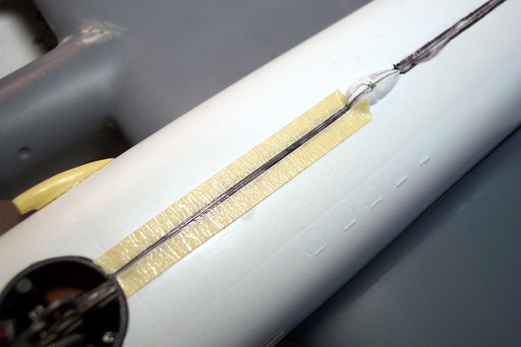
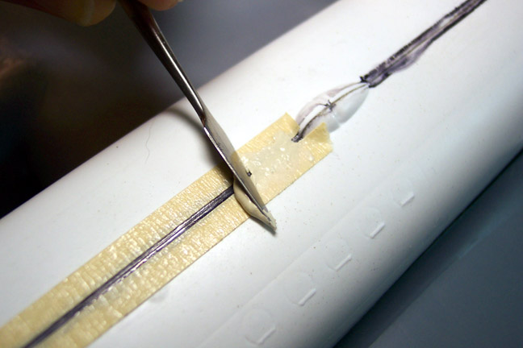
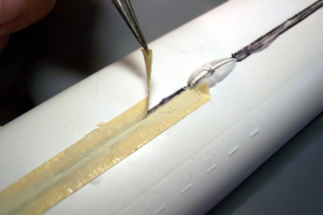
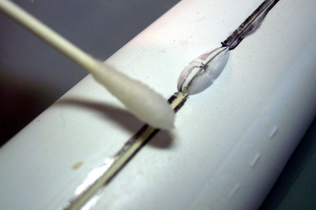

Seam Putty Techniques
Images, text and model Copyright © 2003 by Matt Swan
For many people applying putty to a seam and getting it cleaned up to a degree that allows for paint and looks good is a serious problem. I was one of those people until I discovered this method of puttying. For lack of anything better lets call this The Fencing Technique.
Materials that are going to be needed are:
1. Putty. I am using Squadron White Putty
2. A bottle of acetone based fingernail polish remover. Check the contents, not all are acetone based.
3. Masking tape cut into thin (about ¼ inch) strips.
4. A good pair of tweezers.
5. A tool to apply and smooth out putty. I’m using a detail tool for use with clay.
6. Good quality cotton swabs. I’m using Q-Tip swabs. Better quality swabs will leave fewer threads behind to cause trouble.
7. Very fine sandpaper. Some 400 grit and some 600 grit would be good.
This is a five-step process that moves along at about three inches at a time.
I'm using a Post-It note pad to squeeze out a small amount of putty onto and collecting it from there to apply to the seam.
Step 1: Cut thin strips of masking tape and place along both sides of the seam leaving about a three-millimeter gap. (The Fences)

Step 2: Using a trowling tool (I use a potters detail tool for clay) lay on a coating of white putty.

Step 3: Immediately remove the tape pulling it away from the wet putty.

Step 4: Use a good quality cotton swab (I'm using a Q-Tip) dipped in acetone-based fingernail polish remover and wipe down the putty.
Smooth out the seam. This will greatly reduce the amount of sanding required.

Step 5: After the putty has had ample time to dry, sand the seams with a fine sand paper.
When I say let the putty have ample time to dry, that means something like “overnight”. After the seam has been sanded down use the tip of a razor knife or a pin to clean out any recessed panel lines that may have been filled. If you are dealing with raised panel lines that have been sanded off simply take your razor knife and, holding it at about a 45-degree angle to the surface, trace the line. This will raise a slight ridge and leave a slight engraved line. When all is painted and weathered it will be nearly indistinguishable from the original line.
Next you should clean the model of any dust or other debris and apply a coat of primer, usually a light gray. This will make any defects in the seam show up clearly and give you the opportunity to repair them before putting your top-coats of paint in place.
How did this seam turn out? Take a look at the FW-200 Condor build. That is the model used for this demonstration.